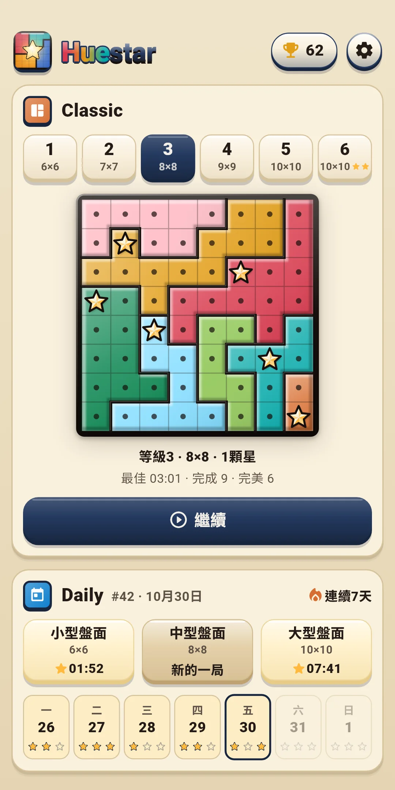
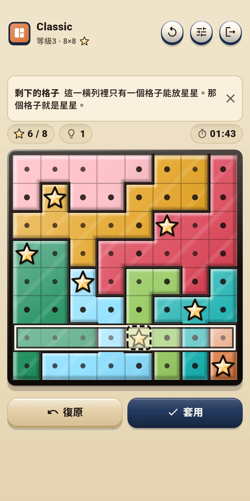
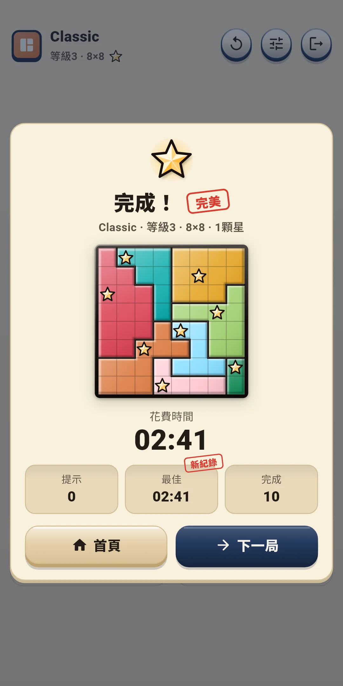
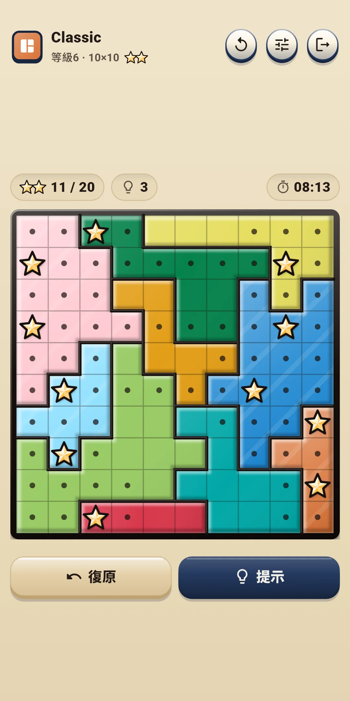
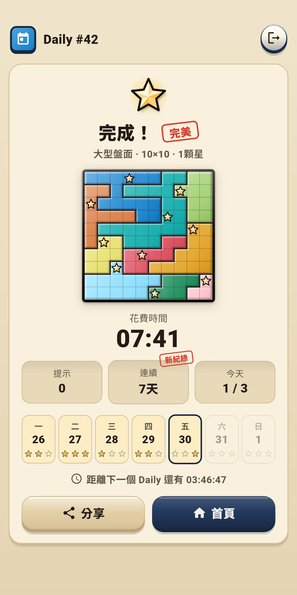
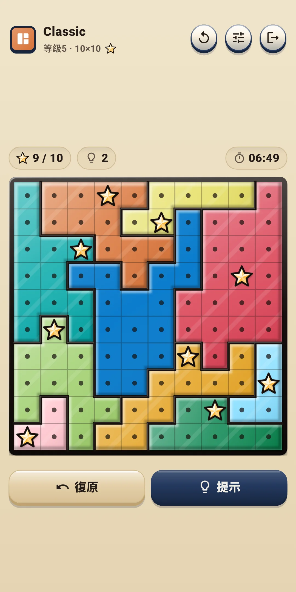
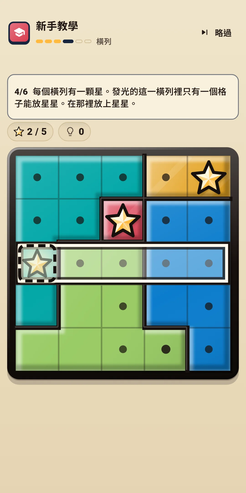

Huestar
玩法說明
玩法說明







| 應用程式名稱 | Huestar |
|---|---|
| 版本 | 1.0.0 |
| 開發 | Willee Project |
| 支援平台 | Android |
Huestar 是一款在被分成顏色區域的盤面上，讓每一橫列、每一直行、每個區域都放上星星的邏輯謎題（Star Battle）。每個盤面都只有一個答案，不靠猜測、只靠邏輯就能解到最後。
新手教學用一個5×5的盤面教你基礎，分六步：區域 → 不能相鄰 → 打圓點 → 橫列 → 直行 → 獨立完成。每一步都會讓要看的地方亮起，只有該點擊的格子才有反應。提示會用名稱告訴你用了哪種要點。從最容易的開始，如下。
等級1的盤面用到試放為止就能解開。等級越高，越會出現需要用到擴大後的「受限」想法的盤面。更難的要點，會由提示連同理由一起告訴你（見第4章）。
頂部一行左側顯示模式名稱和盤面（例如 Classic，等級3 · 8×8 和星星圖案）。星星圖案的數量就是每個橫列、直行、區域要放的星星數（雙星盤面顯示 ★★）。Daily 顯示 Daily 編號（#12）和盤面種類。右側的按鈕如下。
| 按鈕 | 作用 |
|---|---|
| 重來（↻） | 打開選擇這一局從頭開始或新的一局的面板（見下） |
| 快速設定 | 打開一個面板，不離開遊戲畫面就能更改效果、操作方式和輔助功能（見第5、8章）。點擊面板上方或往下拉就能關閉 |
| 離開（門的形狀） | 回到首頁。正在解的盤面會自動儲存 |
盤面正上方的一行：
盤面下方的一行：
| 按鈕 | 作用 |
|---|---|
| 復原 | 取消最後一步操作。沒有可復原的內容時會變淡、不能點擊 |
| 提示 | 告訴你下一步和理由。每點一次會依序變成 提示 → 查看 → 套用（見第4章） |
| [圓點|星星] | 只在操作方式 B 時顯示。決定點擊是放星星還是打圓點 |
重來面板：
| 選項 | 內容 |
|---|---|
| 這一局從頭開始 | 把盤面恢復到最初的樣子。Classic 的用時和提示也從頭算，Daily 則繼續累計當天的用時和提示。還沒有開始操作的盤面會變淡、不能點擊 |
| 新的一局（Classic） | 放棄這一局，換一局同等級的盤面。放棄的盤面不算完成。Daily 沒有這一項 |
提示按鈕會告訴你解題的下一步，並說明理由。提示不限次數，免費使用。
同一個按鈕要按三次：提示 → 查看 → 套用。
在設定的盤面與操作和輔助功能中開關。遊戲中可以用快速設定馬上更改。
| 等級 | 盤面大小 | 每個橫列、直行、區域的星星數 |
|---|---|---|
| 1 | 6×6 | 1顆 |
| 2 | 7×7 | 1顆 |
| 3 | 8×8 | 1顆 |
| 4 | 9×9 | 1顆 |
| 5 | 10×10 | 1顆 |
| 6 | 10×10 | 2顆 |
Huestar Daily #12 · 中 ✅ 03:41 提示 0 🔥 連續5天
#12是 Daily 的編號，旁邊是盤面種類和用時（分:秒，超過一小時則為時:分:秒）。第一行的「Huestar Daily」在任何語言中都一樣。第二行是提示次數，第三行是連續紀錄（兩天以上才顯示）。盤面本身不會放進去，因為會洩露答案。第一個 Daily 開放的那天是 #1，之後每天加一，編號和盤面種類相同就是同樣的盤面。
點擊首頁右上角的獎盃按鈕打開。按鈕上會顯示完成的盤面數。
點擊首頁右上角的齒輪打開。分為四組。遊戲中可以用快速設定按鈕馬上更改前三組。
| 項目 | 內容 |
|---|---|
| 音效 | 開關放星星和拿掉星星、打圓點、區域放滿、規則衝突、提示、復原、盤面完成、結果裡的玻璃碎片等的聲音 |
| 震動 | 放星星時短促，拿掉星星時更輕，區域放滿時兩下，解開盤面時較長。可以開關 |
| 減少特效 | 一次減少所有特效。開啟期間，下面的動畫、光效、彩色玻璃碎片都相當於關閉 |
| 動畫 · 光效 · 彩色玻璃碎片 | 逐項開關特效。動畫是星星彈跳和結果卡片，光效是星星閃爍、區域放滿的光和完成的光，彩色玻璃碎片是結果畫面上飄落的玻璃碎片。沒有整個盤面晃動的特效 |
| 項目 | 內容 |
|---|---|
| 操作方式 | 在 A 點擊切換（預設）和 B 點擊/長按 中選擇（見第3章） |
| 長按時間(毫秒) | 從 250、300、350、400、500 中選擇。預設 350。只在操作方式 B 時顯示 |
| 項目 | 內容 |
|---|---|
| 自動圓點 | 在星星周圍，以及已放滿的橫列、直行、區域裡自動打圓點。預設開啟 |
| 顯示規則衝突 | 顯示相鄰的星星和卡住的橫列、直行、區域。預設開啟 |
| 立即顯示失誤 | 馬上標出與答案不同的星星。預設關閉 |
| 顯示時間 | 在盤面上方顯示時間。預設開啟 |
| 區域花紋 | 給每個區域疊上不同的線條花紋。預設關閉 |
| 項目 | 內容 |
|---|---|
| 語言 | 跟隨系統（預設），或從清單中直接選擇 |
| 隱私權選項 | 再次打開廣告同意視窗。只在需要同意的地區（例如歐洲）顯示 |
| 玩法說明 | 查看規則、操作方式和輔助功能（提示、自動圓點、規則衝突、沒有生命值）的簡短說明 |
| 重玩教學 | 再玩一次新手教學 |
| 關於 | 版本、本說明（玩法說明）、隱私權政策、開放原始碼授權 |